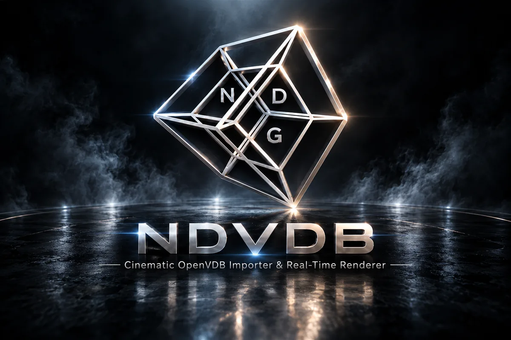

Unity tool · URP
NDVDB
Cinematic OpenVDB importer & real-time renderer
Import and play your own OpenVDB sequences as real-time lit volumetrics: smoke, fire and explosions that composite correctly with each other, your scene and your water.
Unity 6 · URP 17+Plays on Windows · Linux · macOSFull C# & shader source
- Joint compositing. Every visible volume raymarched in one pass, with correct overlap and cross-volume shadows.
- Lighting & fire. Self-shadowing, scene shadows, point and spot lights, and fire that lights its own smoke.
- Water. Wave-accurate splits at the rendered surface; KWS2 and Crest detected automatically.
- Timeline. A native track for sequencing multi-effect shots.